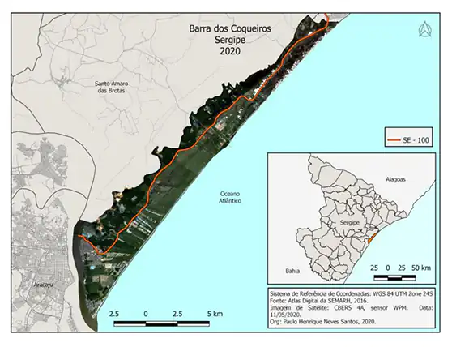
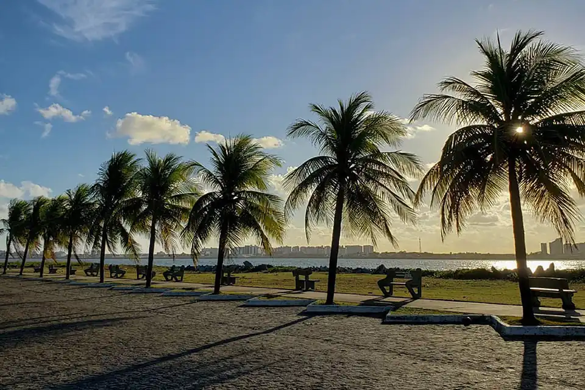
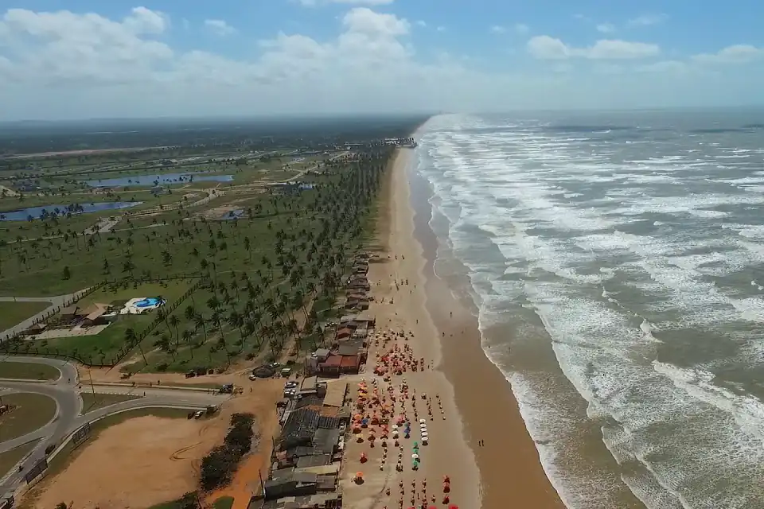
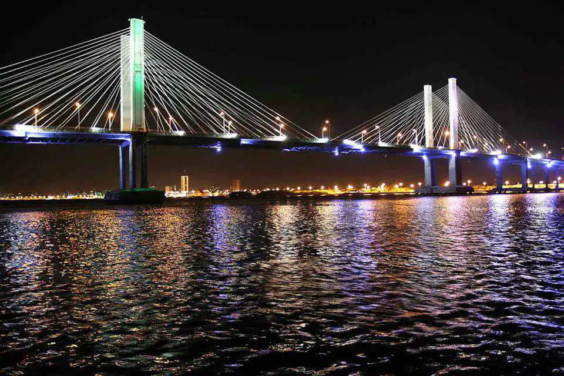
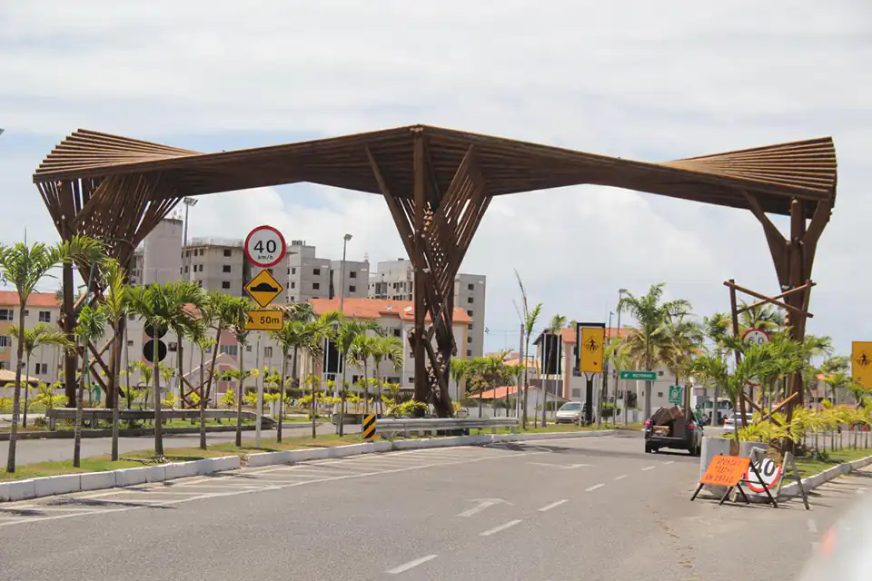
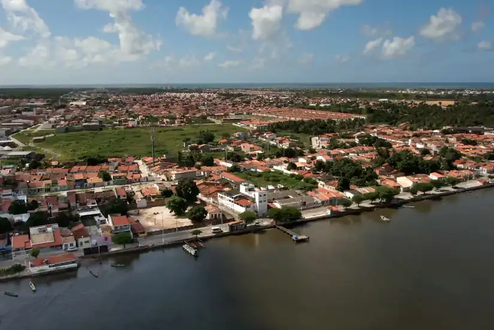
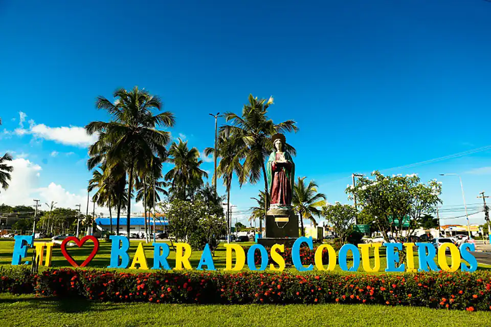
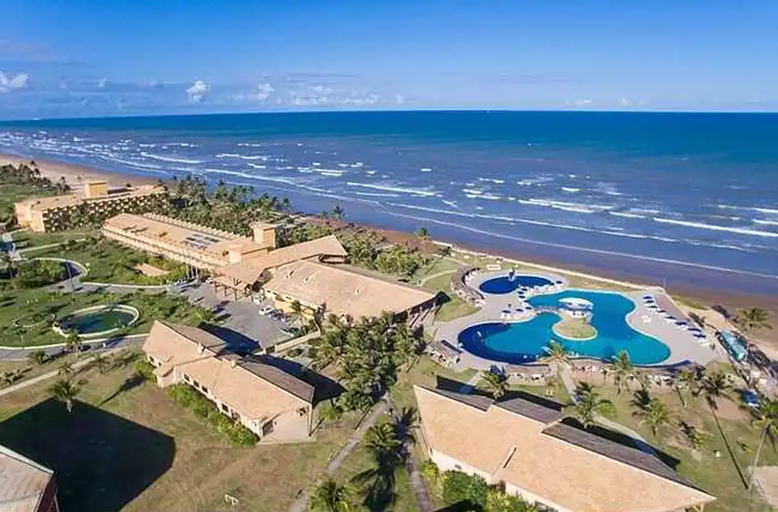

Map
Geographic characteristics
| Total area | 92,268 km² |
| Total population | 28 093 ways. |
| Density | 304.5 hab./km² |
| Climate | Tropical humid to sub-humid |
| Altitude | 9 m |
| Time zone | Brasilia time (UTC-3) |
Indicadores
| HDI | 0,649-médio |
| GDP | R$ 246 250,550 |
| GDP per capita | R$ 9 845,30 |
| Website | barradoscoqueiros.se.gov.br |
| Ano | Pop | +/-% |
|---|---|---|
| 1960 | 4.447 | ----- |
| 1970 | 5.568 | +25.2% |
| 1980 | 7.952 | +42.8-% |
| 1991 | 12.727 | +60.0% |
| 2000 | 17.807 | +39,9% |
| 2010 | 24.976 | .40.3% |
| 2022 | 41.511 | +66.2% |
Page Visits
Barra Atalaia Waterfront

Barra Beach

Barra Bridge

Barra Entrance

Barra dos Coqueiros

Love Barra Letters

Barra Resort
